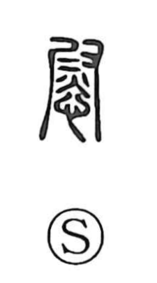

慰

Uncategorized
Kun: nagusameru, nagusamu, iyasu | On: i
to comfort ・ to console ・ to cheer up ・ to divert ・ to heal
Explanation
A phono-semantic character: the phonetic 尉 (i) originally depicted a hand (又) gripping an iron to smooth sheets. Joined with the heart element, it envisions the heart made smooth and pleasant like freshly ironed cloth. From this image the character came to mean to comfort and console, to divert or amuse oneself, and to heal the feelings.